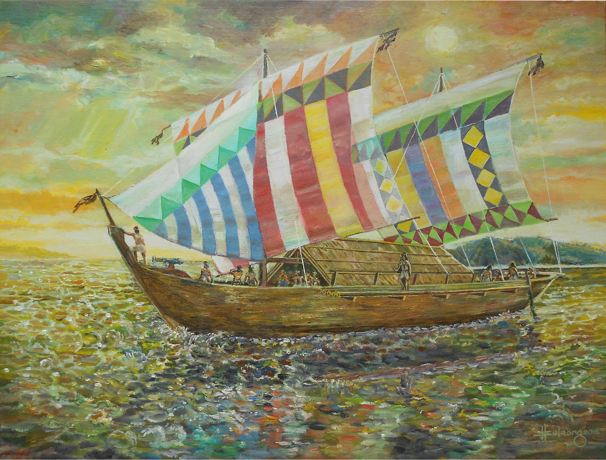
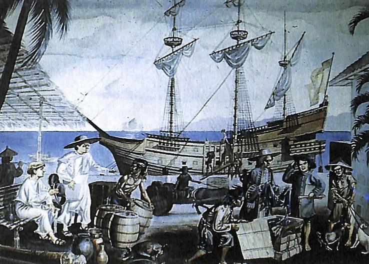
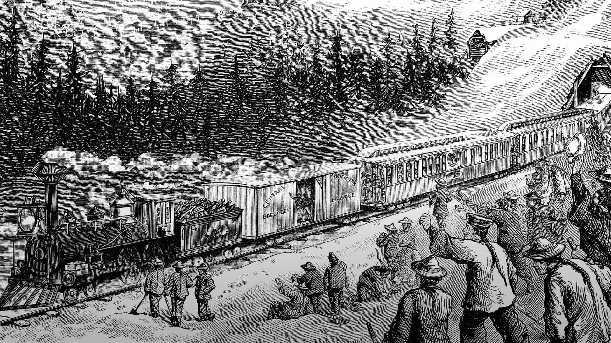
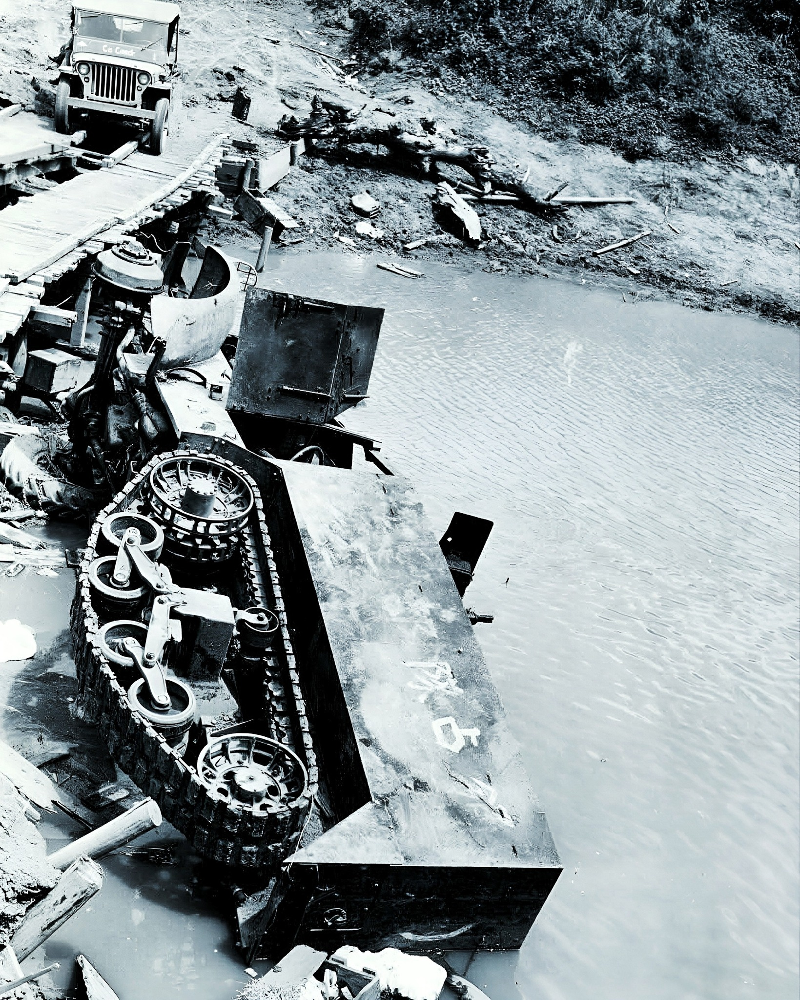
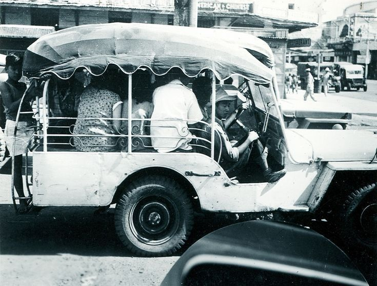
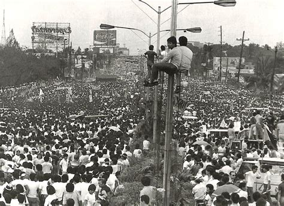
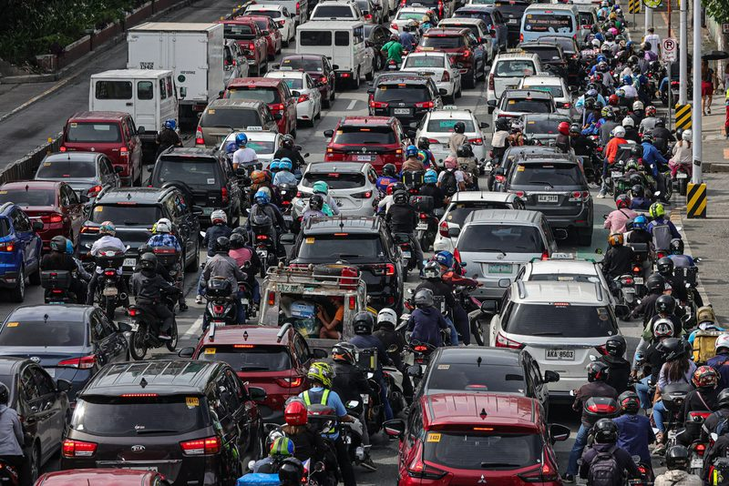

During the pre-colonial era, the Filipino transportation system was primarily maritime. Our ancestors used watercraft like balangay and karakoas for trade and daily life, creating strong inter-island connections. These waterways served as vital links that facilitated a decentralized, adaptive, and naturally integrated system of movement long before colonial powers arrived.

During the Spanish era, transportation heavily relied on watercraft ranging from simple river boats to massive trading galleons, though strict mercantilist policies limited local commerce to prioritize military movements and long-distance trade. The overall system was slow and perilous, constantly plagued by pirates, harsh weather, poor navigation, and inefficient administration that caused massive delays.

The American colonial period brought massive modernization through the rapid expansion of roads, railways, and ports to integrate the economy and strengthen administrative control. While the introduction of automobiles and early aviation modernized Manila and improved the movement of goods, it also introduced new challenges such as illegal "colorum" vehicles and the economic displacement of traditional transport workers.

Civilian transportation was paralyzed during World War II as Imperial Japanese Forces seized all transit infrastructure for military use and an Allied blockade cut off petroleum supplies. Locals were forced to rely on animal-drawn vehicles and makeshift charcoal-burning engines, while strict military passes, hyperinflation, and the deliberate destruction of infrastructure by retreating forces completely crippled the nation's mobility.

After World War II, Filipinos rebuilt their shattered transport system by repurposing leftover U.S. military jeeps into the iconic jeepneys. During this time, the government also utilized new infrastructure for national security, constructing highways in Mindanao to facilitate farmer resettlement and counter the Huk rebellion. However, as the population boomed, poor urban planning ultimately set the stage for crippling traffic congestion in Metro Manila by the 1960s.

Faced with severe urban congestion from rapid population growth, the Marcos administration centralized infrastructure planning and utilized heavy foreign borrowing to build ambitious projects like the Light Rail Transit system. However, these debt-reliant initiatives neglected the existing Philippine National Railways and failed to solve the root causes of the transport crisis, as chaotic urban migration continued to overwhelm the system.

Shifting back to democratic governance, the country increasingly utilized Public-Private Partnerships to fund the expansion of regional transit networks, including the Roll-On/Roll-Off (RORO) system for better inter-island connectivity. Despite these investments, the national system remains overwhelmingly dependent on road-based transport like jeepneys and tricycles, leading to persistent issues with traffic congestion, unequal access, and fragmented planning.

Prevalent in urban centers and areas, it is a result of limited infrastructural capacity and high economic demand.
The absence of a comprehensive, interconnected, and efficient mass transit system forces reliance on smaller, isolated, and road-based vehicles.
Despite being an archipelago, transportation remains entirely land-reliant.
Many communities, especially those in rural areas, lack reliable access to transit services.
[PLACEHOLDER] Brief description of the royal decree or infrastructure policy regarding galleons or roads.
[PLACEHOLDER] Brief description of policy impacting local maritime trade and bridges.
[PLACEHOLDER] Brief description of forced labor (Polo y Servicio) regarding infrastructure.
[PLACEHOLDER] Burnham Plan implementation and urban road network expansion.
[PLACEHOLDER] Establishment of early public works bureaus and regulations.
[PLACEHOLDER] Franchising and regulation of early motorized transit systems.
[PLACEHOLDER] Military commandeering of civilian transportation assets.
[PLACEHOLDER] Curfews and strict regulation of civilian movement and transport.
[PLACEHOLDER] Rationing of fuel and resources affecting local mobility.
[PLACEHOLDER] Post-war rehabilitation acts and foreign aid for infrastructure.
[PLACEHOLDER] Formal recognition and franchising of Jeepneys as public utility vehicles.
[PLACEHOLDER] Establishment of early post-war transport regulatory boards.
[PLACEHOLDER] Creation of the Light Rail Transit Authority (LRTA).
[PLACEHOLDER] Major highway acts and debt-driven infrastructure spending.
[PLACEHOLDER] Consolidation of transport agencies under centralized ministries.
[PLACEHOLDER] Build-Operate-Transfer (BOT) Law for private sector participation.
[PLACEHOLDER] Public Utility Vehicle Modernization Program (PUVMP) directives.
[PLACEHOLDER] Creation of DOTr and various comprehensive mass transit masterplans.
Effective transportation systems require the integration of land, rail, sea, and air transport networks. Instead of functioning independently, interconnecting all four subsystems will create seamless mobility throughout the archipelago. A coalescent transit framework will, overall, reduce congestion, improve efficiency, and provide equal access to Filipino citizens.
As was discussed, modernization programs today often unintentionally exclude the welfare of transport workers. Thus, such programs must be inclusive of workers, small-scale operators and drivers alike. Support mechanisms such as financial assistance and transition programs are equally important to developing upgraded public transport technologies. It ensures that progress benefits both the system and the citizens reliant on the industry.
Desaturating economic activity in the National Capital Region is vital to addressing congestion issues in the national transportation system. By allowing for stronger regional development, transport demands in major urban areas such as Metro Manila, Baguio, Pampanga, Cebu and Davao can be reduced. It promotes equitable growth, lessened congestion, and improved quality of life for Filipinos.
Maritime transport remains a critical backbone of connectivity in an archipelagic nation, yet it is often underutilized and underdeveloped. Revitalizing this sector requires modernizing port infrastructure, upgrading shipping fleets, and improving safety and regulatory standards. Strengthening maritime logistics corridors will facilitate faster and more reliable movement of goods and passengers, particularly in remote and underserved regions. By enhancing accessibility and efficiency across sea routes, the country can stimulate regional economic growth, decongest major urban centers, and reinforce national integration.
Sustainable transportation emphasizes the development of mobility systems that minimize environmental impact while meeting present and future needs. Promoting the use of low carbon emission vehicles, expanding public transit networks, and investing in non motorized transport such as cycling and walking infrastructure are key strategies. Integrating renewable energy sources and adopting green technologies will further reduce the sector’s carbon footprint. Through a balanced approach that prioritizes environmental responsibility, economic viability, and social equity, sustainable transportation can improve quality of life while addressing climate change and urban pollution.
[PLACEHOLDER] The streets belong to the people, not just private vehicles. Add your voice to the movement for a fair, efficient, and dignified Philippine transport system.